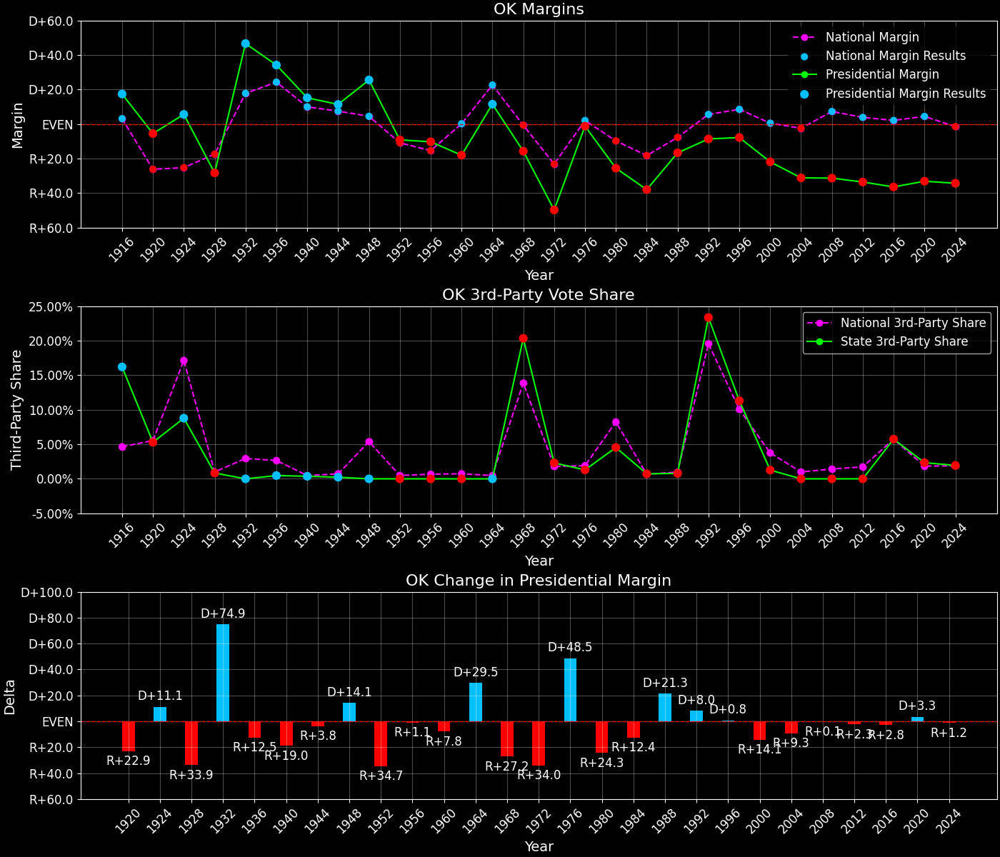

Oklahoma (OK) — Statewide

Margins · 3P share · Pres. deltas

Relative margins · Relative 3P · Rel. deltas
Oklahoma (OK) — Total Data
| Year | EVs | D | R | Margin | Rel. Margin | Nat. Margin | Margin Δ | Rel. Margin Δ | Nat. Margin Δ | Total votes |
|---|---|---|---|---|---|---|---|---|---|---|
| 1968 | 8 | 300,173(32.0%) | 446,031(47.6%) | R+15.6 | R+15.0 | R+0.6 | 936,869 | |||
| 1972 | 8 | 247,018(24.6%) | 758,513(75.4%) | R+50.9 | R+27.3 | R+23.5 | R+35.3 | R+12.3 | R+23.0 | 1,005,531 |
| 1976 | 8 | 530,412(49.5%) | 541,131(50.5%) | R+1.0 | R+3.2 | D+2.2 | D+49.9 | D+24.1 | D+25.7 | 1,071,543 |
| 1980 | 8 | 400,313(36.0%) | 680,220(61.1%) | R+25.1 | R+15.2 | R+9.9 | R+24.1 | R+12.1 | R+12.1 | 1,113,129 |
| 1984 | 8 | 384,900(30.9%) | 861,530(69.1%) | R+38.2 | R+20.1 | R+18.1 | R+13.1 | R+4.9 | R+8.2 | 1,246,430 |
| 1988 | 8 | 483,423(41.6%) | 678,367(58.4%) | R+16.8 | R+9.0 | R+7.7 | D+21.5 | D+11.1 | D+10.4 | 1,161,790 |
| 1992 | 8 | 473,066(34.1%) | 592,929(42.8%) | R+8.6 | R+14.2 | D+5.6 | D+8.1 | R+5.2 | D+13.3 | 1,385,873 |
| 1996 | 8 | 488,105(40.6%) | 582,315(48.5%) | R+7.8 | R+16.4 | D+8.6 | D+0.8 | R+2.2 | D+3.0 | 1,201,208 |
| 2000 | 8 | 474,082(38.4%) | 743,938(60.3%) | R+21.9 | R+22.4 | D+0.5 | R+14.0 | R+6.0 | R+8.0 | 1,233,627 |
| 2004 | 7 | 503,964(34.4%) | 959,789(65.6%) | R+31.1 | R+28.7 | R+2.5 | R+9.3 | R+6.3 | R+3.0 | 1,463,753 |
| 2008 | 7 | 502,496(34.4%) | 960,165(65.6%) | R+31.3 | R+38.6 | D+7.3 | R+0.1 | R+9.9 | D+9.7 | 1,462,661 |
| 2012 | 7 | 443,547(33.2%) | 891,325(66.8%) | R+33.5 | R+37.4 | D+3.9 | R+2.3 | D+1.1 | R+3.4 | 1,334,872 |
| 2016 | 7 | 420,375(28.9%) | 949,136(65.3%) | R+36.4 | R+38.5 | D+2.1 | R+2.8 | R+1.1 | R+1.8 | 1,452,992 |
| 2020 | 7 | 503,890(32.3%) | 1,020,280(65.4%) | R+33.1 | R+37.5 | D+4.4 | D+3.3 | D+1.0 | D+2.3 | 1,560,699 |
| 2024 | 7 | 499,599(31.9%) | 1,036,213(66.2%) | R+34.3 | R+32.7 | R+1.5 | R+1.2 | D+4.8 | R+6.0 | 1,566,173 |
Column explanations
- Year
- Election year.
- EVs
- Number of electoral votes allocated to this state or unit.
- D
- Number of votes for the Democratic candidate (raw count(pct%)).
- R
- Number of votes for the Republican candidate (raw count(pct%)).
- Margin
- Margin between the two major-party candidates, including third-party votes ((D - R)/total).
- Rel. Margin
- The presidential margin relative to the national presidential margin (Margin - Nat. Margin).
- Nat. Margin
- The national presidential margin for that year, including third-party votes ((D_total - R_total)/total_votes).
- Δ
- Change (delta) in the value from the previous election year. Blank if no data for previous year.
- Total votes
- Total voter turnout or ballots cast (when provided).
Oklahoma (OK) — Third-Party Data
| Year | Other votes | 3P Share | 3P Nat. Share | 3P Rel. Share |
|---|---|---|---|---|
| 1968 | 190,665(20.4%) | T+20.4 | T+13.6 | T+6.8 |
| 1972 | 0(0.0%) | T+0.1 | T-0.1 | |
| 1976 | 0(0.0%) | T+0.3 | T-0.3 | |
| 1980 | 32,596(2.9%) | T+2.9 | T+7.0 | T-4.0 |
| 1984 | 0(0.0%) | T+0.1 | T-0.1 | |
| 1988 | 0(0.0%) | T+0.2 | T-0.2 | |
| 1992 | 319,878(23.1%) | T+23.1 | T+19.2 | T+3.8 |
| 1996 | 130,788(10.9%) | T+10.9 | T+9.7 | T+1.2 |
| 2000 | 15,607(1.3%) | T+1.3 | T+3.7 | T-2.4 |
| 2004 | 0(0.0%) | T+0.8 | T-0.8 | |
| 2008 | 0(0.0%) | T+1.4 | T-1.4 | |
| 2012 | 0(0.0%) | T+1.6 | T-1.6 | |
| 2016 | 83,481(5.7%) | T+5.7 | T+5.5 | T+0.2 |
| 2020 | 36,529(2.3%) | T+2.3 | T+1.8 | T+0.5 |
| 2024 | 30,361(1.9%) | T+1.9 | T+1.9 | T+0.1 |
Column explanations
- Year
- Election year.
- Other votes
- Number of votes for third-party (other) candidates (raw count(pct%)).
- 3P Share
- Share of the vote received by third-party (other) candidates.
- 3P Nat. Share
- The national third-party share for that year (3P votes / total votes).
- 3P Rel. Share
- Third-party share relative to the national third-party share (3P share - Nat. 3P share).

Two-party margins · relative · deltas
Oklahoma (OK) — Two-Party Data
| Year | 2-Party Margin | 2-Party Nat. Margin | 2-Party Rel. Margin | 2-Party Margin Δ | 2-Party Nat. Margin Δ | 2-Party Rel. Margin Δ |
|---|---|---|---|---|---|---|
| 1968 | R+19.5 | R+0.7 | R+18.9 | |||
| 1972 | R+50.9 | R+23.6 | R+27.3 | R+31.3 | R+22.9 | R+8.4 |
| 1976 | R+1.0 | D+2.2 | R+3.2 | D+49.9 | D+25.8 | D+24.1 |
| 1980 | R+25.9 | R+10.6 | R+15.3 | R+24.9 | R+12.8 | R+12.1 |
| 1984 | R+38.2 | R+18.1 | R+20.1 | R+12.3 | R+7.5 | R+4.8 |
| 1988 | R+16.8 | R+7.8 | R+9.0 | D+21.5 | D+10.4 | D+11.1 |
| 1992 | R+11.2 | D+6.9 | R+18.2 | D+5.5 | D+14.7 | R+9.1 |
| 1996 | R+8.8 | D+9.5 | R+18.3 | D+2.4 | D+2.6 | R+0.1 |
| 2000 | R+22.2 | D+0.5 | R+22.7 | R+13.4 | R+8.9 | R+4.4 |
| 2004 | R+31.1 | R+2.5 | R+28.7 | R+9.0 | R+3.0 | R+6.0 |
| 2008 | R+31.3 | D+7.4 | R+38.7 | R+0.1 | D+9.8 | R+10.0 |
| 2012 | R+33.5 | D+3.9 | R+37.5 | R+2.3 | R+3.4 | D+1.2 |
| 2016 | R+38.6 | D+2.2 | R+40.8 | R+5.1 | R+1.7 | R+3.4 |
| 2020 | R+33.9 | D+4.5 | R+38.4 | D+4.7 | D+2.3 | D+2.4 |
| 2024 | R+34.9 | R+1.6 | R+33.4 | R+1.1 | R+6.1 | D+5.0 |
Column explanations
- Year
- Election year.
- 2-Party Margin
- Margin between the two major-party candidates, ignoring third-party votes ((D - R)/(D + R)).
- 2-Party Nat. Margin
- The national presidential margin for that year, including third-party votes ((D_total - R_total)/total_votes).
- 2-Party Rel. Margin
- The presidential margin relative to the national presidential margin (Margin - Nat. Margin).
- Δ
- Change (delta) in the value from the previous election year. Blank if no data for previous year.